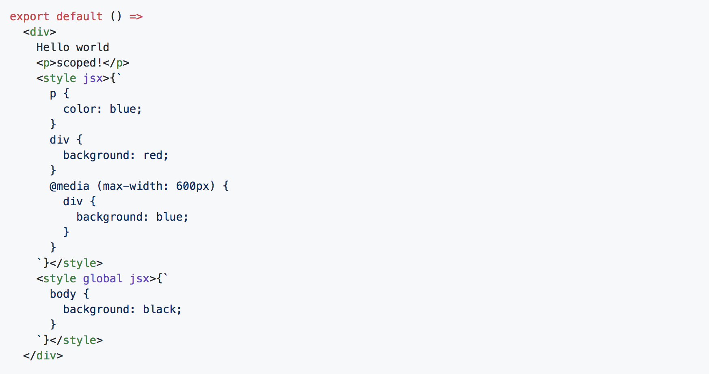

Framework for server-rendered or statically-exported React apps
Run the same code in the backend and in the frontend!!
*SEO friendly
Every import you declare gets bundled and served with each page. That means pages never load unnecessary code!
Uses `styled-jsx` to isolate scope
Client-side transitions between routes can be enabled via a `Link` component